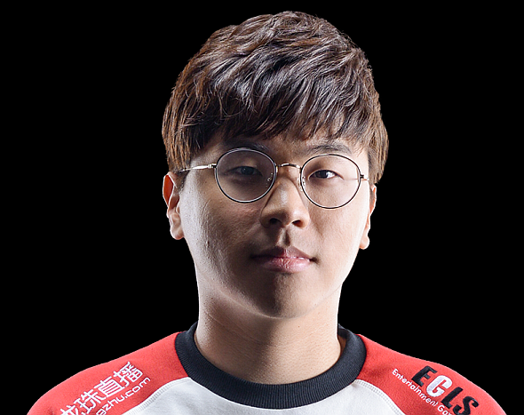

Song "Smeb" Kyung-Ho (Top)
En av de främsta Top laner spelarna genom tiderna. Har i genomsnitt 3.8 i KDA (Kill/Deaths/Assists) och 463,3 damage per minute. 338 vinster och 208 förluster, även en 70% win rate på hans tre mest spelade champions. Slutade spela professionelt i slutet av 2020.
Bae "Bengi" Seoung-Woong (Jungle)
Världsmästare 3 gånger med SKT T1, MSI-segrare, 5 gånger vunnit LCK och en All-star Invitational mästare. Han har 150 vinter till 61 förluster och håller en 70% win rate med champions som Lee Sin och Elise.